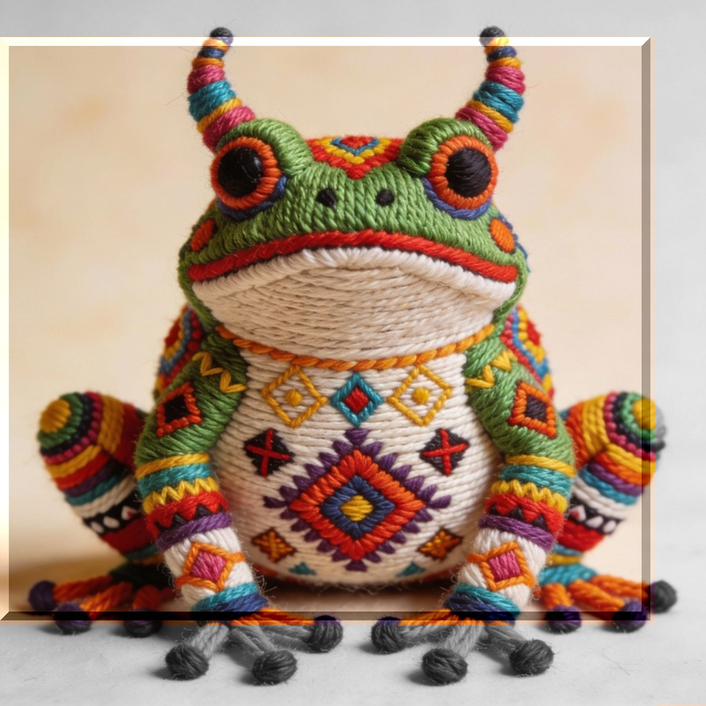

cage
lyrics
夢見るカクテル
ウィチョルのタテワリ
chivas illegal ハイボール
cageの中のツノガエル
モゴモゴと口を動かして
こっちの僕を じっと眺めてた
気づけばアウトの
サイドから切り込むも
祭りは終わって
あとのまつり
ハイライト ダイジェスト
ただのナンバー 覚えてらんない
ハイライト ダイジェスト
記憶も記録 ひとつきだ
義憤に駆られた
フリでもしてれば
夢見るかわりに差し出す摂理
現実の利子と 理想のデマ
モゴモゴと自白はじめた
遠隔操作されたスパイだ
加工済みのトラウマ
なんちゃっての燻製
二重のtrapに
もうかかってる
ハイライト ダイジェスト
ただのナンバー 皮算用
ハイライト ダイジェスト
振り返ったら そこに何が
モニター越しの安全地帯
強化ガラスは端が弱い
可能性とか もういいかい
見てるだけで 満足かい
ハイライト ダイジェスト
ただの数字さ 覚えてらんない
ハイライト ダイジェスト
振り返ったら あのツノガエル
ハイライト ダイジェスト
記憶も記録 あとのまつりだ
ハイライト ダイジェスト
それはつまり そういうことだ
notes
年末とかが近づくとテレビはきまって今年の出来事を振り返ってる。最近じゃ、一日の出来事ですらもランキング形式で。トレンドと注目度。さらっと追悼しちゃったりして終わりとかさ。あーそういえばこんなことあったねーなんて言いながら結局見てるんだけどさ。
ダイジェストは「全体がわかるまとめ」で、ハイライトは「全体の中でも特にいいところ」のことをいうのだけれど、どっちももう終わってしまったあとのことなんだよね。楽しかった飲み会の帰り道、ポツンと一人になってしまうアレに似た感情。漠然とした空白に舞い降りてくるまとまりのない言葉。ケージの中のツノガエルより自分の方がケージの中にいるような錯覚。気がつけば再生数とか、フォロワー数とか気になりだしちゃっててさ。
だからこそ、千人が一回ずつ聴くより、二人が百回聴く曲を書けたらって思ってる。そのほうが素敵だってココロでは理解してるつもりなのに…っていや、数じゃないって話だったのに。数字の魔力とわかり易さ。
「美術を見るのに記号、あるいは暗号として読み取ろうとしかできない人たちがいる。作品に深く響き合い始めるのを待っていられないのだろうか。」 舟越桂
暗号を読み解くならまだいいんだよ。ひどいのは数字しか見てないことだ。気がつけばあっという間に飲み込まれてたよ、さすが民主主義だ。少数の意見だって必要とされてるのは中身じゃない。やっぱりただの数字なんじゃないかな。
それに年齢なんてのも、ただのナンバー。えっ、いくつになったって？
覚えてらんないよ。